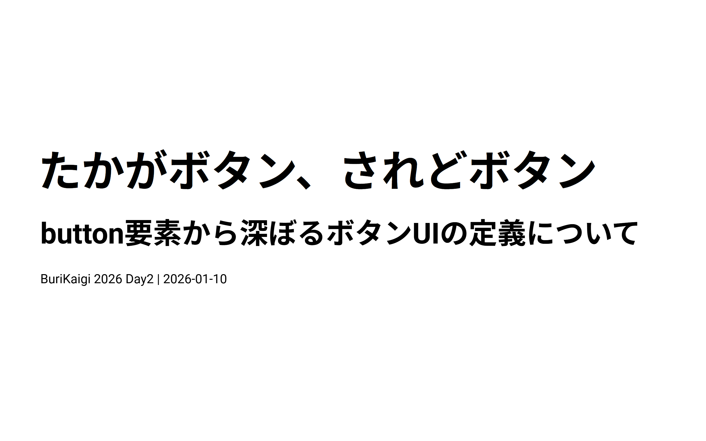

たかがボタン、されどボタン
～button要素から深ぼるボタンUIの定義について～

スライド
スライド版ページ
はじめに
皆さん、今日はどうやってこの会場に来ましたか？電車の方、スマホで乗換案内アプリを使いましたか？車の方、カーナビを操作しましたか？
その時、皆さんは何気なく「ボタン」を押していたはずです。
私たちは現実世界でも、アプリの世界でも、Webの世界でも、何十回、何百回とボタンを押しています。でも 「ボタンとは何か？」 と聞かれたら、皆さんは明確に答えられるでしょうか？
今回の発表では、この「ボタン」についてを徹底的に深掘りしていきます。
ボタンは「押せるもの」という認識
「ボタン」と言うと皆さんはどんなものを想像しますか。
- 送信ボタン
- 検索ボタン
- 決定ボタン
- トグルボタン
- ラジオボタン
- 戻るボタン、次へボタン
- 開閉ボタン
上記に挙げたものはボタンの一例ですが、これらに共通するものはいずれも「押せそう」なものです。
このモノと人との間に生まれる「押せそうに見える」という感覚をもつこと、これをアフォーダンスと呼びます。
アフォーダンスは、心理学者ジェームズ・ギブソンが提唱した概念で、モノの形がその使い方を誘発するというものです。たとえば椅子を見かけたら人は座るかもしれないし、それを台にするかもしれないし、なんらかの置き場にするかもしれません。人とモノの数だけアフォーダンスは生まれます。
ここから派生して認知科学者ドナルド・ノーマンはシグニファイアという概念を提唱しました。こちらはUIデザインの文脈で使われるもので、モノの使い方を誘発するための「ヒント」とされています。
単なるボタンは押せそうに見えますが、これがdisabled、つまり非活性になっている場合あれば「押せない」というヒントが提示されていると分かります。特定のアイコンが書かれたボタンがあればそれに対応したボタンだと分かります。ボタン自体の形を変えることで、どのような操作が可能かを示すことができたりします。
ボタンというものは必ずしも現実世界にあるものだけを指すものではありません。ソフトウェアエンジニアであれば毎日見かけるボタン、すなわちOSのGUIにおけるインターフェースも挙げられます。
現在はGUIで操作することに馴染みがありますが、それ以前の時代では黒い画面に緑色の文字を打ち込む「コマンドライン」が主流でした。cd /home/documents のようなコマンドを知らなければ、ファイルを開くこともできませんでした。GUIでは画面にアイコンが並び、マウスでクリックできる。ウィンドウを開いたり閉じたりできる。そして何より、「押せそうに見えるもの」を押せば何かが起こるという直感的な操作が可能になったのです。
デザイントレンドの変化における影響
コンピュータが軍事目的や一部研究の中でしか使われなかったものも、インターネットの発展と共に普及していきました。Windows、Macintoshが発売され、GUIは一般の人々の手に届くようになりました。そして2007年、iPhoneの登場でスマートフォン時代が幕を開けます。
この頃のUIデザインを特徴づけるのがスキューモーフィズムです。
スキューモーフィズムとは、デジタル上のオブジェクトを現実世界の物に似せてデザインする手法です。カレンダーアプリは本物の革表紙の手帳のように、メモアプリは黄色い紙のメモ帳のように、そしてボタンは立体的で、光沢があり、押せば凹みそうな見た目でデザインされました。
なぜそんなデザインにしたのでしょうか？
スマートフォンではタップ操作になり、GUIでのクリック操作とは違う体験になります。そんな中でインターフェースを無機質なものとして提供するのではなく「これは押せるもの」というヒントを伝えるためのデザインでした。現実世界で押しボタンを押した経験があれば、画面上のボタンも同じように押せると直感的に理解できる。これがスキューモーフィズムの狙いです。
しかし2012年、Windows 8が登場し、2013年にはiOS 7がリリースされ、デザインのトレンドは大きく変わりました。フラットデザインの時代です。立体感や光沢は排除され、シンプルで平面的なデザインが主流になりました。
要素の関係性が分かりやすく配置もしやすくなり、見た目はスッキリしましたが、ここで問題が起きます。それは、ユーザーがボタンとテキストの区別がつかなくなるという問題です。
その後もニューモーフィズムやグラスモーフィズムといったデザイントレンドが台頭してきますが、それぞれのデザインにおいてもボタンとしての視認性を損なっているものが散見されています。これがボタンがボタンに見えなくなるという、ボタンUIにまつわる問題の始まりです。
ちなみにGoogleはこの問題を解決するためにマテリアルデザインを提唱し、フラットデザインを扱いつつもUIに意味を与えていくガイドラインを制定しています。
これはボタン？それともリンク？
フラットデザインは、Webの世界ではさらに複雑な事象を生み出します。Webにはボタンによく似た別のものが存在するからです。それはハイパーリンクによるボタンです。
これまでリンクテキストというものは文書内に存在するもので通常のテキストと比較して見分けがつくものでした。スマートフォンやタブレットといったタッチデバイスが普及するにつれてリンク自体も押下しやすいものにされる傾向が増え、リンクボタンなるものが生まれてきました。
ここからは、私自身の経験をお話しさせてください。
あるプロジェクトで、デザイナーから渡されたUIコンポーネントの中に「〇〇Link」という名前のボタンUIがありました。私はその名前を信じて <a> タグで実装しました。
ところが、実際の画面に組み込んでみると、このコンポーネントの用途は「クリックするとモーダルが開く」ためのものでした。
URLは変わりません。ページ遷移もしません。画面上でモーダルが開閉するだけ。これ、本当にLinkってコンポーネント名で良いのでしょうか。
私はその後UIデザインをしたデザイナーと議論しました。「他のLinkコンポーネントと見た目は似ているが、動作としてはボタンのものだから <button> にすべきでは？」最終的にこのコンポーネント名の見直しがされ <button> で実装されることになりました。
通常ボタンとハイパーリンクとはまったく別の役割をもつものです。ですがボタンのような見た目、すなわちCSSによる装飾によって、リンクとしてのそれなのか、はたまたボタンとしてのものなのかは区別がつきづらくなります。
そこで私はボタンUIというものを「実装」の視点から理解していくことを薦めます。
「残念な」ボタンUI実装を知る
マークアップエンジニアを経験していた私はHTMLについてと真摯に向き合っていました。この経験を経て、私は世の中に溢れる「残念な」ボタン実装について深く考えるようになりました。これから紹介するのは私がこれまで見かけてきた残念なボタンUI実装についての紹介をします。
type属性を忘れた <button>
<form>
<label><input type="text" name="zipCode">郵便番号</label>
<button onclick="searchAddress()">住所検索</button>
<label><input type="text" name="prefecture" autocomplete="address-level1">都道府県</label>
<label><input type="text" name="city" autocomplete="address-level2">市区町村</label>
<label><input type="text" name="address" autocomplete="address-line1">番地</label>
<button>送信する</button>
</form>
まず最初にbuttonで実装しているけどtype指定を忘れてしまっているものです。
<a> タグのボタン風装飾
<a href="#" onclick="doSomething()">処理を実行する</a>
<a href="javascript:void(0)" onclick="openModal()">モーダルを開く</a>
次に見た目をボタン風にCSSで装飾した <a> タグです。
<div> タグでボタンのように実装
<div onclick="handleClick()">ボタン</div>
最後に見た目はボタンのように実装し、クリックすれば動く<div>でのボタンです。
以上、3つのボタンUIにおける残念な実装を紹介しましたが、皆さんはこれらがどのような問題があるか分かるでしょうか。
HTMLの仕様観点やガイドラインより、なぜこれらが問題なのかをこれから紐解いていきます。
仕様から見るボタンの定義
1つ目の問題から見ていきましょう。<button>とは何かを理解するために、HTMLの仕様書を読んでいきます。
<button> 要素の仕様を読む
仕様書であるHTML Living Standardでは、<button> 要素について次のように定義されています。
"The button element represents a button labeled by its contents."
（button要素は、その内容によってラベル付けされたボタンを表します）
シンプルですね。では、type属性についてはどうでしょうか？
| type値 |
挙動 |
submit |
フォームを送信する |
reset |
フォームをリセットする |
button |
何もしない（スクリプト用） |
ここで重要なのはtype属性を省略した場合のデフォルト値です。
仕様書には次のように書かれています：
The attribute's missing value default and invalid value default are both the Auto state.
A button element is said to be a submit button if any of the following are true:
the type attribute is in the Auto state, both the command and commandfor content attributes are not present, and the parent node is not a select element; or
the type attribute is in the Submit Button state.
つまり、<button> と書くだけで、<button type="submit"> と同じ意味になるのです。
なぜこのような仕様になっているのでしょうか？
もともとHTMLにおける「ボタン」というものはフォームを送信するためのものでした。皆さんが知っている<button>要素はHTML 4.0で導入されました。何かを押してアクションをするだけの type="button" は送信のそれと比べるとそこまで求められていない時代でした。
現在は入力した内容をサーバーサイドへ送信するにしても<form>を使わずにAPIと連携して送信するような形が取られるようになったり、インタラクションとしての表現も増えてきたため、送信がデフォルトであることを皆が忘れてしまっているのではないか、と私は思っています。
それを証明する証拠として様々なボタンのサンプルコードではtype指定をしていないものが散見されています。
参考とするサンプルコードで省略されていたとしても、実際のプロダクションコードではそれを省略しないでもらいたいです。
<!-- 🔴 危険：フォーム内で意図せず送信が発生 -->
<form>
<button onclick="searchAddress()">住所検索</button>
<button>送信する</button>
</form>
<!-- 🟢 用途に分けてtype指定 -->
<form>
<button type="button" onclick="searchAddress()">住所検索</button>
<button type="submit">送信する</button>
</form>
これだけで、あの「なぜかページが遷移する・リロードされる」という問題をなくすことができます。
ただ、これを人力で防ぐのは大変なので各種Linterのルールでチェックしていくことをお勧めします。
余談ですがtype属性には、仕様として決定はしていないものの、新たな属性値を追加したいという要望が出ています。Web Share APIを判別するためのtype="share"やボタンが押されていることを判別するtype="press"といったものがあります。
また<button>のデフォルト挙動をtype="submit"ではなくtype="button"にできないかという声も上がっています。
これらはいずれもWeb標準の挙動としてはまだ確立されていませんが、HTMLの仕様が現在進行形で更新されていくものである以上、今後の動向には注目していきたいです。
ボタンとリンクの本質的な違い
次に<a>で作るボタン要素の問題点について説明しましょう。
ボタンとリンク、HTMLで表現する要素としてそもそも別のものなので違うというのは分かりますが、具体的に何がどう異なるのかについてわかりますでしょうか。
ボタンとリンクの求められる振る舞いについて、WAI-ARIA Authoring Practices Guide（APG）というW3Cが発行しているアクセシビリティに考慮したUI実装パターン集より引用させていただきます。
Buttonの定義
"A button is a widget that enables users to trigger an action or event, such as submitting a form, opening a dialog, canceling an action, or performing a delete operation."
（ボタンは、フォーム送信、ダイアログを開く、アクションのキャンセル、削除操作など、アクションやイベントをトリガーするウィジェットです）
Linkの定義
"A link widget provides an interactive reference to a resource. The target resource can be either external or local."
（リンクは、リソースへの対話的な参照を提供します。対象リソースは外部でもローカルでも構いません）
まとめると以下のようになります。
|
ボタン |
リンク |
| 目的 |
アクション実行 |
ナビゲーション |
| 期待される結果 |
何かを実行する |
ページ遷移・特定位置に移動する |
| 例 |
モーダルを開く、削除する |
別ページへ移動 |
つまり、リンクはどこかへ移動する、ボタンは何かをするものと定義されており、それに反したものを作るのは混乱のもとになってしまいます。
キーボード操作の違い
ボタンとリンクでは、それぞれキーボード操作の期待値が異なります。
APGが定義するButton Pattern
"When the button has focus:
Space: Activates the button.Enter: Activates the button."
つまり、ボタンはEnterキーでもSpaceキーでも発火します。
APGが定義するLink Pattern
"Enter: Executes the link and moves focus to the link target."
リンクはEnterキーのみで発火します。Spaceキーを押すと、ページがスクロールできる長さの場合に限りスクロールできます。
ボタンの振りをするために処理を追加する
ではリンクの振る舞いをボタンのようにするにはどうすればいいでしょうか。
const link = document.getElementById('link');
link.addEventListener('keydown', (e) => {
if (e.key === 'Enter' || e.key === ' ') {
e.preventDefault();
link.click();
}
});
Spaceキーのイベントを手動でハンドリングし、スクロールを防止し、クリックイベントを発火させる、という実装を加えてみました。
しかし、これで本当に完璧なボタンになるでしょうか。リンクは右クリック時や一部キーを使うことでボタンにはない挙動を実現します。これらも防ぐ必要があります。
これらの実装を加えてようやくボタンに近い挙動となります。ですが、ここまで考慮してまで<a>でボタンを実装する意味は本当にあるのでしょうか。
ブラウザごとでの挙動が異なったり、把握していないものもあったりするので、<a>でボタンのように実装するのはやめましょう。
この教訓から得られることから、<button>でリンクのような挙動を表現するのも向いていないことも言えます。理由は同様にリンクのための挙動を<button>で実装していく必要があるからです。
再掲となりますが、ナビゲーションには<a>を使い、アクションとしては<button>で実装するようにしましょう。
<div>でボタンの振る舞いを疑似的に表現する
最後に<div>で実装したものの問題点についても紹介します。
見た目はボタンUIのように実装されたものの、これはボタンとは言えません。単なるクリックできるdiv要素です。
これがなぜボタンと言えないのか。それはHTMLネイティブ要素がもつ暗黙的な役割が関係しています。
<button>は「ボタン」という役割、<a>は「リンク」という役割を持っています。他にも<h1>であれば「見出し」、<p>であれば「段落」という役割を持っています。一方で<div>については他と違って明確な役割をもっていません。
これは見た目上では分かりませんが、ブラウザを音声で読み上げるスクリーンリーダーといった支援技術にとっては重要なものとなります。
スクリーンリーダーで要素にアクセスすると、その要素がもつ役割を最初に読み上げ、次のその要素が持つ内容を読み上げます。
<button type="button" onclick="openDialog()">ダイアログを開く</button>
たとえば上記のようなコードであれば「ボタン、ダイアログを開く」といった風に読み上げられます。これで「ダイアログを開くためのボタン」ということが分かります。
ただの<div>でボタンのような実装をする際、この状態では「ボタン」と判別することができません。
<div onclick="openDialog()">ダイアログを開く</div>
WebアクセシビリティのガイドラインであるWCAG（Web Content Accessibility Guidelines）には、このことに関連する達成基準があります。
4.1.2 Name, Role, Value（Level A）
すべてのUIコンポーネントにおいて、名前とロールがプログラムで決定可能であること
<div onclick> でボタンを作ると、この基準に違反します。なぜなら、支援技術に「これはボタンです」という情報が伝わらないからです。
この基準を達成させるために、<div>で実装する場合はrole="button"を付与することで、機械側では「ボタン」と判別することができるようになります。
<div role="button" onclick="openDialog()">ダイアログを開く</div>
しかしながら、機械的にはボタンと判別できるようになりましたが、先ほどの<a>でも取り上げたように、キーボード操作といった振る舞いの期待を満たすためには自分で実装する必要があります。
2.1.1 Keyboard（Level A）
すべての機能がキーボードで操作可能であること
<div onclick> はTab順序に含まれず、キーボード操作ができません。これもWCAG違反です。
これを解決するためには、tabindex="0"を付与することで、キーボード操作が可能になります。
<div role="button" tabindex="0" onclick="openDialog()">ダイアログを開く</div>
更にボタンの動作にはクリックした瞬間だけではなく、EnterやSpaceキーの押下も含めたキーボード操作への対応も必要となります。
こういった実装をすべて独自に行うと、ネイティブの複雑なキーボード挙動を再現しきれず、ユーザーの期待とズレる可能性が非常に高くなりリスクが高いです。
W3Cの「Using ARIA」という文書には、ARIAを使うための第一のルールが書かれています。
If you can use a native HTML element or attribute with the semantics and behavior you require already built in, instead of re-purposing an element and adding an ARIA role, state or property to make it accessible, then do so.
（必要なセマンティクスと振る舞いを持つネイティブHTML要素が使えるなら、ARIAで無理やり作るのではなく、それを使ってください）
APGにも「No ARIA is better than Bad ARIA」、ARIA無しのほうが、悪いARIAよりも良い、という格言があります。ARIAを使わずに、最初からネイティブの <button> を使えばボタンとしての正しい挙動がついてきます。独自のカスタム要素でアクセシブルに担保するには相当のテストやチェックを行わない限りは避けた方が良いでしょう。
以上が残念な実装が何故残念と言われているかの紹介でした。ボタンがもつ役割についてをきちんと理解できていれば、残念な実装というものは無くなると思います。
おわりに
私たちは毎日、当たり前のようにボタンを実装しています。AIエージェントの普及に置いて自らがボタンを実装することも減ってきて、ボタンに対して何を今更…と考えているかもしれません。
しかしその「ボタン」というものには、GUIの長い歴史から始まり、HTML仕様書の定義があり、アクセシビリティのガイドラインがあり、そしてそのボタンを押すユーザーがいます。
マウスを使う人、キーボードだけで操作する人、スクリーンリーダーを使う人——すべてのユーザーにとって使いやすいボタンを作ること。それがUIを作るものの責任です。
<button>の扱い方を誤ったり、リンクとボタンを混同して実装したり、意味を理解せずにWAI-ARIAだけでボタンを作ってしまうことは、特定のユーザーの体験を除外してウェブの普遍性を損なう行為となってしまいます。
「たかがボタン」と侮ることなく、その背後にある技術的背景とユーザー体験への影響を理解し、適切な要素を選択すること。それこそがWebアプリケーション開発者に求められる「されどボタン」の精神です。
今日の発表が、皆さんの「ボタン」に対する見方を変えるきっかけになれば幸いです。
参考文献
HTML Standard
ARIA Authoring Practices Guide
WCAG 2.2
Nielsen Norman Group
Adrian Roselli